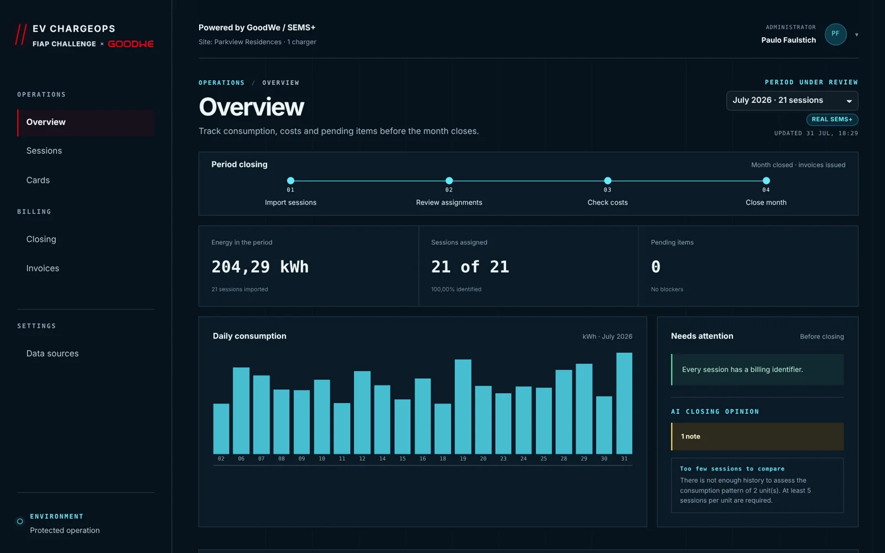
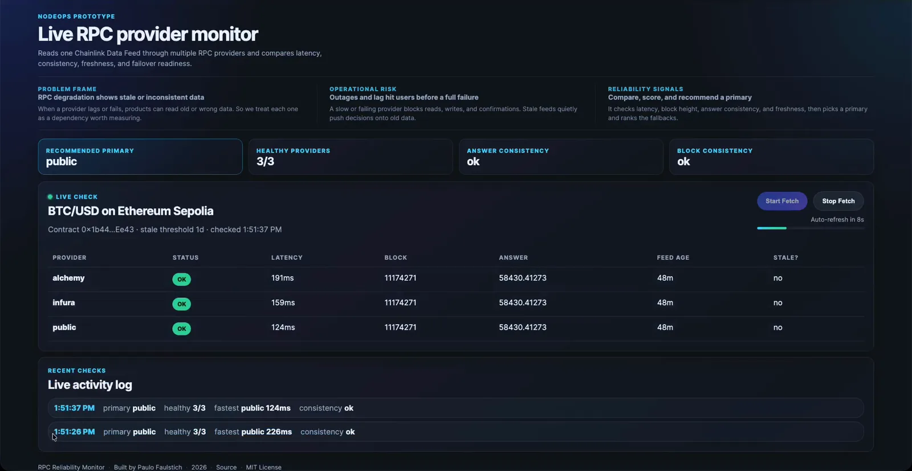

View projectEV ChargeOps
Turns a shared charger's export into an auditable invoice per apartment.
Working prototype with synthetic data. It started as an entry in an industry challenge run by GoodWe with FIAP.
Entrepreneurship + Engineering + Product
I turn ideas into 0→1 products.
I work across payments, loyalty and Web3, from eCommerce and POS integrations to a token’s smart contracts, treasury and tokenomics. Now I’m bringing AI into financial products and operations.
Rooted in software engineering, I’ve always been drawn to solving problems with technology. That led me to co‑found a digital product studio and build products for global brands. Today I’m hands-on enough to build and experienced enough to lead product teams.
Qualcomm, UnitedHealthcare, Audi, Coca-Cola, Microsoft, Red Bull, Walmart, Vodafone, Siemens and Sonae.
01 / Selected work
Case studies at the intersection of fintech, Web3, platforms and AI.

View projectTurns a shared charger's export into an auditable invoice per apartment.
Working prototype with synthetic data. It started as an entry in an industry challenge run by GoodWe with FIAP.

View projectCompares RPC providers on a Chainlink price feed: response time, availability and data freshness.
A monitoring prototype. It recommends providers; it does not route traffic or operate Chainlink nodes.
A loyalty token and audit trail built on Hedera's token and messaging services.
A testnet prototype and retrospective product case study.
01 / 03
02 / Path
From writing software, to co-founding two startups, to leading product in fintech and Web3.
2021 – Present
I own product strategy and the roadmap for Twism’s loyalty and payments platform: payments, wallets, eCommerce and POS integrations, and the Twism token, from tokenomics and smart contracts to the treasury platform.
I also lead R&D on AI capabilities, from LLM use cases and agents to AI-assisted automation. As Head of Product, US, I now lead Twism’s go-to-market in the United States.
I started as Director of Integration, designing the ledger and transaction systems behind high-volume payments and rewards, and integrating POS systems and payment providers.
2010 – 2021
I co-founded Nodo in Brazil and helped grow it into a digital product studio of about 70 people. As a founder I wore every hat: I wrote code, ran client projects end to end and brought in new business, leading 0→1 development for clients such as Red Bull, Coca-Cola, Walmart and Sonae.
In 2019 I led our U.S. expansion and moved into product full time, running product for a UnitedHealthcare solution that supports its national sales team and for Qualcomm’s onboarding and training platforms.
Along the way we spun off Urbotip, a civic engagement app, which was acquired by Grupo RBS, one of Brazil’s largest media groups.
2008 – 2010
I started my career at Conrad Caine, a Munich-based company, working from its office in Brazil. I built software for global brands including Microsoft, Red Bull, Audi and Vodafone, from customer-facing applications to the customer-support and help-desk systems behind them.
Beyond shipping features, I engineered the custom frameworks and reusable components the team built on, so we could deliver complex products on time. It taught me early to think in systems, not just screens, which is still how I approach product.
Outside of work
Fintech and Web3 products, end to end: usage-based billing for shared EV charging, a loyalty token on Hedera and a reliability monitor for Chainlink price feeds.
See the projectsMachine learning coursework at UCLA Extension and Stanford Online, applied to the products I build.
Volunteer mentor at InovAtiva Brasil, advising early-stage startups on product strategy and growth.
Good to know
Products at the intersection of fintech, Web3 and AI: payments, loyalty, eCommerce and POS integrations, wallets, and token infrastructure such as tokenomics, smart contracts and treasury. I also use AI to automate processes and improve results. Before that I built enterprise products across healthcare, telecom, retail, automotive and consumer brands, for companies like UnitedHealthcare, Qualcomm, Walmart and Red Bull.
Technical enough to be a real peer to engineers. I started as a software engineer, and I still read APIs, system diagrams and logs to understand a problem. When a decision depends on a technical question, I build a prototype to answer it, usually with AI coding tools. My job is to make sound trade-off calls and help engineering converge, not to prescribe the implementation.
All the time. Product sits between engineering, business, marketing, sales and leadership, and I’ve worked with all of them, plus partners, vendors and enterprise clients. I make the shared goal and the trade-offs explicit early, so decisions don’t depend on who reports to whom.
Products where fintech, Web3 and AI meet. In fintech, payments, loyalty and the integrations behind them. In Web3, tokenization and the infrastructure that makes on-chain products reliable. In AI, LLMs, RAG, agents and automation, built with AI coding tools every day. What interests me most is where the three overlap: AI that changes how financial products are built and operated.
Most of my professional work is confidential, so what I can show here is limited. My work spans enterprise clients, startups, and personal projects and case studies. The ones on this page are the part I can share openly.
Florida. I work in English and Portuguese.